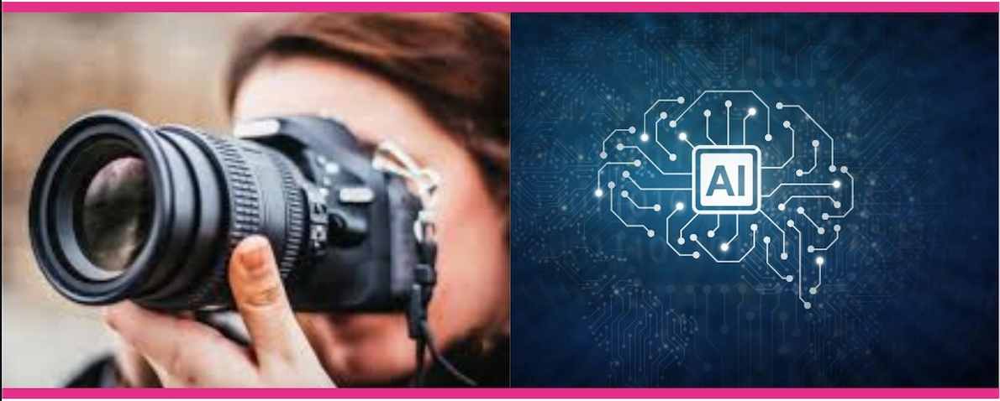

"Camaira" is taken from the word "Camera", which is what our project is generally about, and because we use AI for the project, we slip the “AI” word in between, so it became Cam-A-I-ra, and it’s read Camaira.
In the age of smartphone cameras, low-light photography is a must have. Most low-light photography use traditional denoising and deblurring techniques which are effective for removing some noise but fail in extreme conditions like darkness, which is a big challenge. Our objective is make it possible to obtain a proper photograph even in an extremely low light conditions. This feature can be useful to overcome one of photography community's challenge: night photography. This feature can also be useful for daily photographs to obtain ideal pictures without worrying about lighting conditions.
Insert Image File Format : RAW
Image File Format Result : PNG
Super resolution generated using ESRGAN mode by training amount of images data into a weight. This weight used to deploy to a predict test function. This is the user interface for recovery images from low-resolution images to high-resolution images.
Insert Image File Format : All image format (png, jpg, jpeg, bmp, etc)
Image File Format Result : All image format (png, jpg, jpeg, bmp, etc)